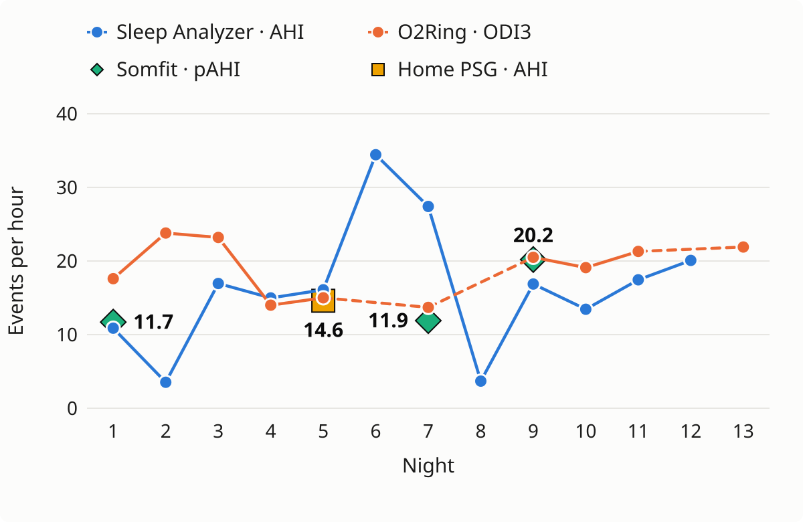

ACCESS-OSA: Example multi-night at-home reports
Example reports from the three devices used to screen for obstructive sleep apnoea in the ACCESS-OSA randomised controlled trial. Data is illustrative (simulated).
Example overview

Nightly event rates (events per hour) from each device and home PSG.
Reports
Not optimised for mobile; best viewed on a desktop or laptop.